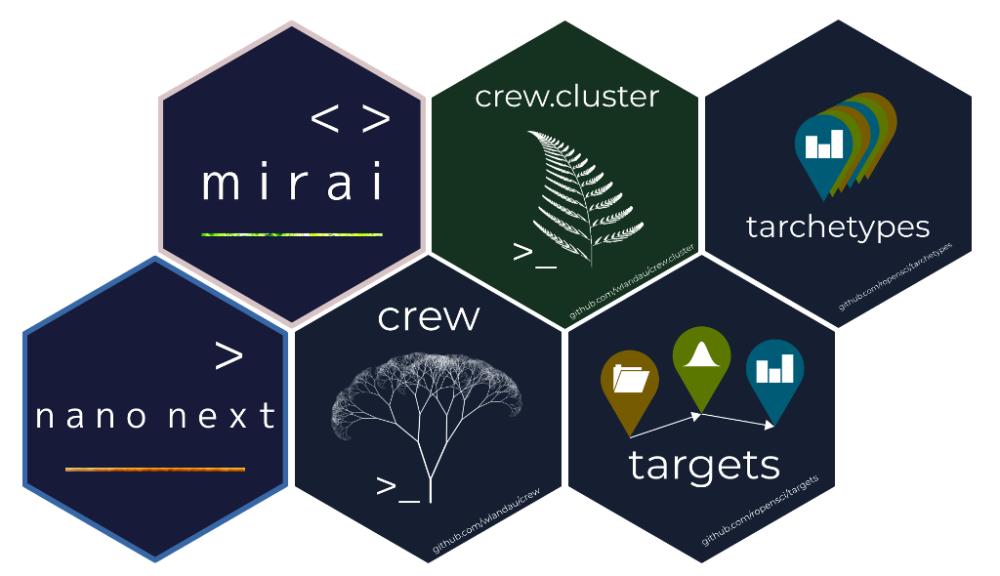
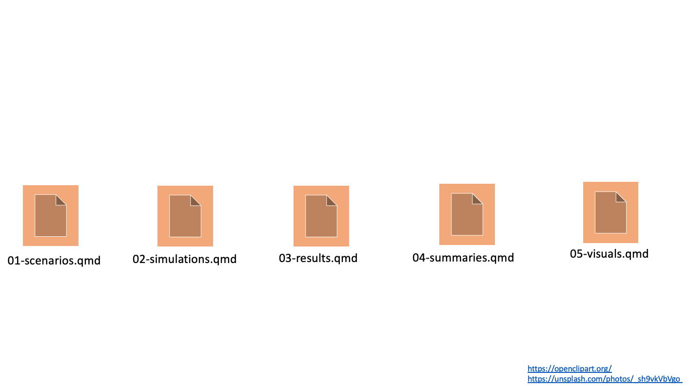
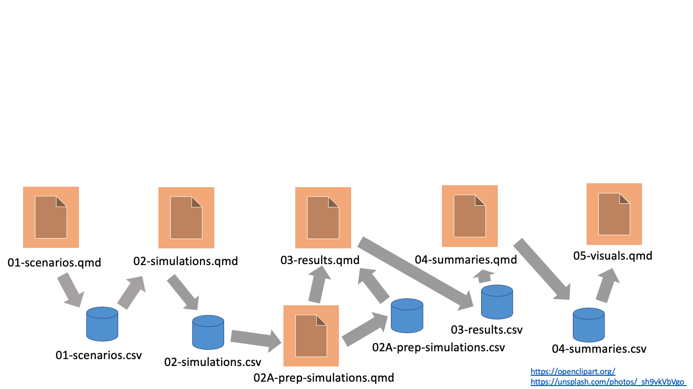
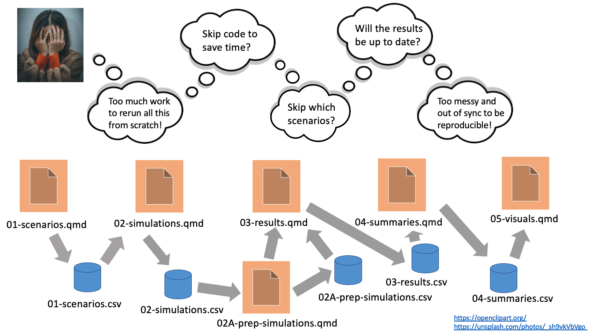
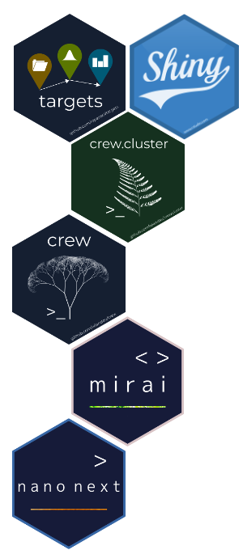
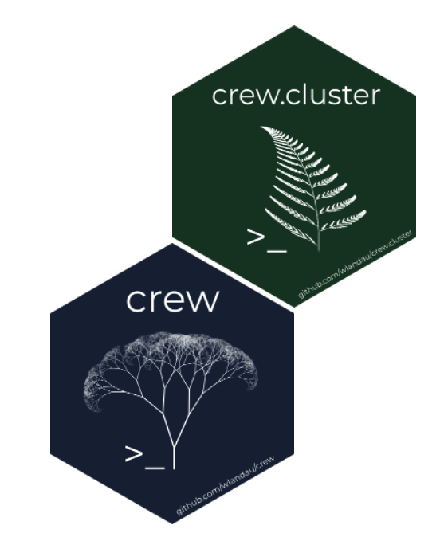
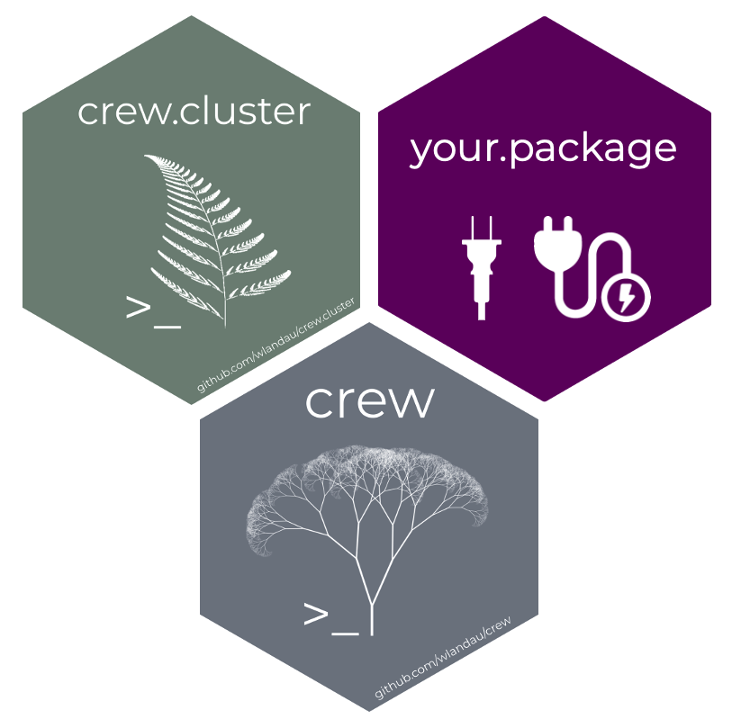
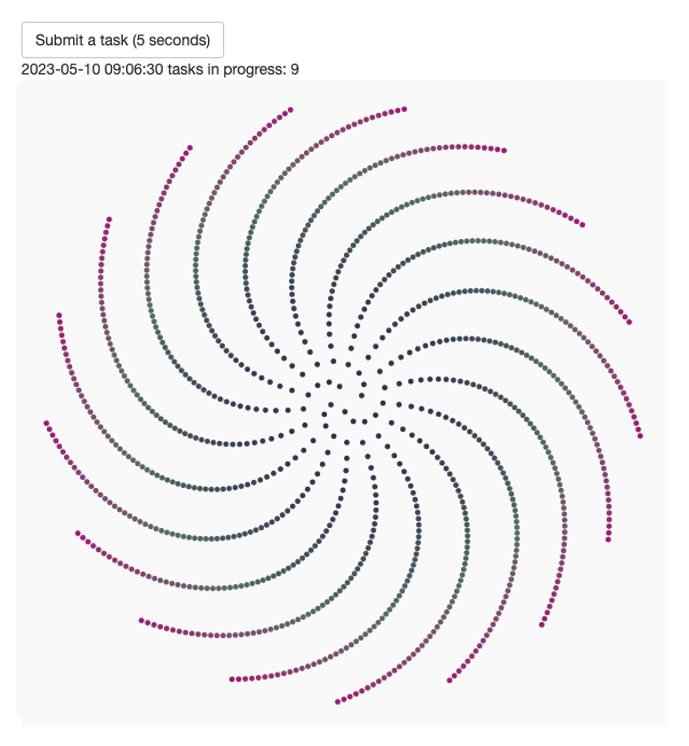
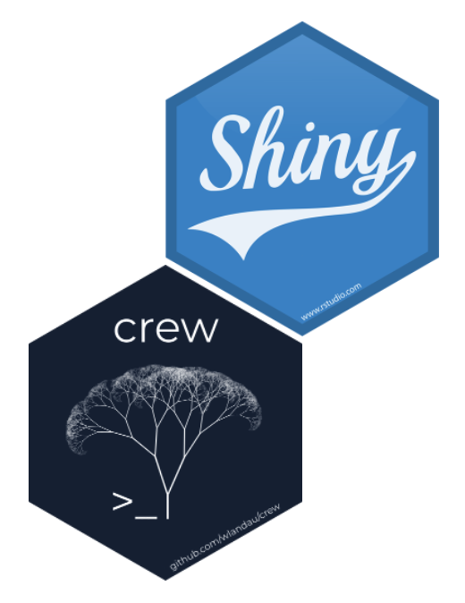
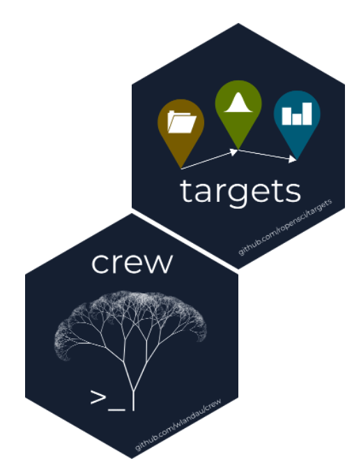

simulate_dataset <- function(
mean_response_drug,
sample_size
) {
patient_id <- paste0(
"patient_",
sample.int(n = 1e9, size = sample_size, replace = FALSE)
)
study_arm <- rep(
x = c("drug", "placebo"),
each = sample_size / 2
)
response_drug <- rnorm(
n = sample_size / 2,
mean = mean_response_drug,
sd = 4.25
)
response_placebo <- rnorm(
n = sample_size / 2,
mean = 1,
sd = 4.25
)
tibble(
patient_id = patient_id,
study_arm = study_arm,
response = c(response_drug, response_placebo)
)
}Leveraging {targets} and {crew} to simulate clinical trials
Will Landau
Agenda
- Clinical trial design and simulation
- Example simulation project
targetscrew- Q & A
Trial design: optimization and balance
Clinical trial simulation
Example trial and simulation
- Randomized, controlled, parallel, non-adaptive phase 3 study.
- Randomize half the patients to drug, half to placebo.
- The main outcome (primary endpoint) is continuous, and a higher score is healthier.
- Declare efficacy if the p-value is < 0.05 from a 1-sided hypothesis test.
- Goal of the simulation: determine minimum number of patients required to demonstrate superiority to placebo with 90% power and Type I error less than 5%.
Simulation code: R functions
- A data analysis is a sequence of transformations.
- Functions are great tools to express those transformations.
simulate_dataset()accepts a simulation scenario (with sample size and assumed efficacy level) and returns a simulated dataset.analyze_dataset()accepts a simulated dataset and returns a one-row data frame with a p-value (and optionally posterior probabilities, etc.).simulate_trial()chainssimulate_dataset()andanalyze_dataset()together.
simulate_dataset()
library(tibble)
dataset <- simulate_dataset(
mean_response_drug = 2,
sample_size = 800
)
dataset
#> # A tibble: 800 × 3
#> patient_id study_arm response
#> <chr> <chr> <dbl>
#> 1 patient_545860557 drug 0.950
#> 2 patient_68238256 drug 0.524
#> 3 patient_197379753 drug 7.05
#> 4 patient_577319868 drug -1.46
#> 5 patient_291086621 drug 8.60
#> 6 patient_851227638 drug -0.202
#> 7 patient_96276021 drug 13.2
#> 8 patient_2032492 drug -5.26
#> 9 patient_439198057 drug -2.48
#> 10 patient_947918099 drug 6.99
#> # ℹ 790 more rows
#> # ℹ Use `print(n = ...)` to see more rowsanalyze_dataset()
analyze_dataset <- function(dataset) {
dataset %>%
mutate(
study_arm = factor(
study_arm,
levels = c("placebo", "drug")
)
) %>%
lm(formula = response ~ study_arm) %>%
summary() %>%
coefficients() %>%
as.data.frame() %>%
filter(grepl("^study_arm", rownames(.))) %>%
mutate(
p_value = pnorm(
q = `t value`,
lower.tail = FALSE
)
) %>%
pull(p_value) %>%
tibble(p_value = .)
}simulate_trial()
Scenarios
Procedure
- Use
simulate_trial()to simulate thousands of replications of each scenario (row above). - Within each scenario, calculate the proportion of replications declared efficacy (p-value < 0.05).
Goals
- Determine the lowest sample size with power \(\ge\) 90% and type 1 error < 5%.
- Manage the computational demands of large simulations.
A reproducible analysis pipeline tool

Demanding computation in R: simulation and beyond
- Clinical trial simulation
- Bayesian data analysis: Stan, JAGS, NIMBLE,
greta,SBC - Network meta-analysis
- PK/PD:
nlmixr,mrgsolve - Statistical genomics
- Machine learning:
keras,tensorflow,torch,tidymodels - Permutation tests
- Database queries:
DBI - Big data ETL
Typical notebook-based simulation
Messy reality: managing data
Messy reality: managing change
Make-like pipeline tools
- Orchestrate moving parts.
- Skip up-to-date results.
- Scale the computation.
- Manage output data.
targets
- Designed for R.
- Encourages good function-oriented programming habits.
- Automatic dependency detection.
- Behind-the-scenes data management.
- Distributed computing.
Resources
- Get started in four minutes: https://vimeo.com/700982360
- Example project: https://github.com/wlandau/targets-four-minutes
- Documentation website: https://docs.ropensci.org/targets/
- User manual: https://books.ropensci.org/targets/

Get started with targets
- Write functions that produce datasets, models, and summaries.
- Call
use_targets()to generate code files fortargets. - Edit
_targets.Rby hand to define a test pipeline (start small). - Use
tar_manifest()andtar_visnetwork()to inspect the pipeline. - Use
tar_make()to run the pipeline. - Inspect the results with
tar_read()ortar_load(). - Scale up the pipeline from the small test case.
_targets.R file
Inspect the pipeline
tar_manifest()
#> # A tibble: 3 × 2
#> name command
#> <chr> <chr>
#> 1 simulations_scenario_1 "simulate_trial(mean_response_drug = 2…
#> 2 simulations_scenario_2 "simulate_trial(mean_response_drug = 2…
#> 3 results "bind_rows(simulations_scenario_1, sim…
tar_outdated()
#> [1] "simulations_scenario_1" "simulations_scenario_2"
#> [3] "results"
tar_visnetwork()Run the pipeline
tar_make()
#> ▶ start target simulations_scenario_1
#> ● built target simulations_scenario_1 [0.118 seconds]
#> ▶ start target simulations_scenario_2
#> ● built target simulations_scenario_2 [0.009 seconds]
#> ▶ start target results
#> ● built target results [0.001 seconds]
#> ▶ end pipeline [0.209 seconds]Results in the data store
Change a command
tar_outdated()
#> [1] "simulations_scenario_1" "results"
tar_make()
#> ▶ start target simulations_scenario_1
#> ● built target simulations_scenario_1 [0.057 seconds]
#> ✔ skip target simulations_scenario_2
#> ▶ start target results
#> ● built target results [0.001 seconds]
#> ▶ end pipeline [0.137 seconds]Change a function
tar_outdated()
#> [1] "simulations_scenario_1" "simulations_scenario_2"
#> [3] "results"
tar_make()
#> ▶ start target simulations_scenario_1
#> ● built target simulations_scenario_1 [0.055 seconds]
#> ▶ start target simulations_scenario_2
#> ● built target simulations_scenario_2 [0.009 seconds]
#> ▶ start target results
#> ● built target results [0 seconds]
#> ▶ end pipeline [0.144 seconds]Evidence of reproducibility
Extending targets and scaling out

Cloud storage
- Store target data and metadata on Amazon S3 or Google Cloud Storage.
- Benefits:
- Store less data locally.
- Inspect results on a different computer.
- Track history.
- Details: https://books.ropensci.org/targets/cloud-storage.html
Target factories
- A target factory is a reusable function that creates target objects.
- Usually requires metaprogramming: http://adv-r.had.co.nz/Computing-on-the-language.html#substitute
#' @title Example target factory in an R package.
#' @export
#' @description A target factory to analyze data.
#' @return A list of 3 target objects to:
#' 1. Track the file for changes,
#' 2. Read the data in the file, and
#' 3. Analyze the data.
#' @param File Character of length 1, path to the file.
target_factory <- function(file) {
list(
tar_target_raw("file", file, format = "file", deployment = "main"),
tar_target_raw("data", quote(read_data(file)), format = "fst_tbl", deployment = "main"),
tar_target_raw("model", quote(run_model(data)), format = "qs")
)
}Target factories simplify pipelines
Example: literate programming
- Goal: do the hard computation upstream, then show the results in downstream literate programming documents using
tar_read()andtar_load(). tar_quarto()andtar_render()render documents as targets in the pipeline.1
Example report.qmd
Quarto in the _targets.R file
Run the report in the pipeline
Scale out with tar_map_rep()
- Need to compare different sample sizes and different efficacy scenarios.
- Need thousands of simulation replications to estimate operating characteristics (power, type 1 error).
- The
targetspackage supports flexible static branching and dynamic branching. tarchetypes::tar_map_rep()is a target factory that uses static branching for scenarios and dynamic branching for replications within scenarios.
Scaled out _targets.R file
list(
tar_map_rep(
name = simulations,
command = simulate_trial(
mean_response_drug = mean_response_drug,
sample_size = sample_size
),
values = scenarios,
batches = 25, # branch targets per scenario
reps = 40, # reps per branch target,
names = all_of(c("efficacy", "sample_size")),
columns = all_of(c("efficacy", "sample_size"))
),
tar_target(
name = results,
command = simulations %>%
group_by(efficacy, sample_size) %>%
summarize(success = mean(p_value < 0.05))
),
tar_quarto(report, "report.qmd")
)Branching structure
- Each square “pattern” target is a dynamic target with a simulation scenario.
- Each simulation scenario has 25 dynamic branches.
- Each dynamic branch runs 40 simulation replications.
Run the scaled out pipeline
tar_make()
#> ▶ start target simulations_batch
#> ● built target simulations_batch [0.001 seconds]
#> ▶ start branch simulations_strong_700_81ce2d93
#> ● built branch simulations_strong_700_81ce2d93 [0.16 seconds]
#> ▶ start branch simulations_strong_700_4d5726ca
#> ● built branch simulations_strong_700_4d5726ca [0.147 seconds]
#> ...
#> ▶ start target simulations
#> ● built target simulations [0.003 seconds]
#> ▶ start target results
#> ● built target results [0.004 seconds]
#> ▶ start target report
#> ● built target report [1.742 seconds]
#> ▶ end pipeline [19.171 seconds]Aggregated simulations
tar_read(simulations)
#> # A tibble: 4,000 × 7
#> p_value efficacy sample_size tar_batch tar_rep tar_seed tar_group
#> <dbl> <chr> <dbl> <int> <int> <int> <int>
#> 1 0.00436 strong 700 1 1 1242392391 3
#> 2 0.00383 strong 700 1 2 1005013755 3
#> 3 0.00468 strong 700 1 3 848869470 3
#> 4 0.00932 strong 700 1 4 407471040 3
#> 5 0.0131 strong 700 1 5 2136134101 3
#> 6 0.00887 strong 700 1 6 -1329548112 3
#> 7 0.00481 strong 700 1 7 1808542408 3
#> 8 0.0207 strong 700 1 8 1569885781 3
#> 9 0.00588 strong 700 1 9 -1140470982 3
#> 10 0.0709 strong 700 1 10 89908551 3
#> # ℹ 3,990 more rows
#> # ℹ Use `print(n = ...)` to see more rowsResults
- A sample size of 800 achieves 90% power while controlling type 1 error at 5%.
Problem
- Real simulations can take hours to run.
- Targets run sequentially by default.
Solution

crew: a framework for asynchronous and distributed computing.- Plugs into
targetspipelines to run steps in parallel.
A distributed worker launcher for asynchronous tasks
Parallel/async tools before crew
future: unifying interface for distributed computing.clustermq: fast functional programming on computing clusters.mirai: fast task scheduler on the local network.rrq: Redis-based task queue.callr: manage individual external R processes.promises: opinionated situation-specific asynchronous programming.- More listed at https://CRAN.R-project.org/view=HighPerformanceComputing.
What is crew?
Why crew?
- Fast
crewis fast sincemiraiis asynchonous and ultra-efficient.
- Frugal
crewlaunches new workers when the task load increases.- Workers can exit when the task load decreases (e.g. configurable maximum idle time).
- Friendly
crewmanages all tasks and results from one central controller.- Supports controller groups with different types of workers.
- Users can write launcher plugins for different platforms such as traditional clusters and cloud computing services.
- Fits right into
targetsand Shiny apps.

crew interface
# Set up the session.
library(crew)
controller <- crew_controller_local(workers = 2, seconds_idle = 10)
controller$start()
# Submit a task.
controller$push(name = "example", command = Sys.sleep(10))
# Collect the result.
while (is.null(result <- controller$pop())) Sys.sleep(0.001)
print(result)
#> # A tibble: 1 × 11
#> name command result seconds seed error trace warnings ...
#> <chr> <chr> <list> <dbl> <int> <chr> <chr> <chr> ...
#> 1 example Sys.sleep(10) <lgl [1]> 10.0 319445426 NA NA NA ...
# Terminate the controller, including the dispatcher process.
controller$terminate()
Push or pop tasks at any time
crew.cluster & controller groups
# Local process controller
local <- crew_controller_local(name = "name_local", workers = 2)
# Sun Grid Engine controller
sge <- crew.cluster::crew_controller_sge(
name = "name_sge",
seconds_launch = 60,
workers = 50,
sge_cores = 4,
sge_memory_gigabytes_required = 2L,
seconds_idle = 30,
seconds_exit = 2,
sge_log_output = "logs/",
script_lines = paste0("module load R/", getRversion())
verbose = TRUE
)
# Controller group
controller <- crew_controller_group(local, sge)
# Submit a task to whichever controller.
controller$push(command = Sys.sleep(10))
# Submit to a specific controller.
controller$push(command = Sys.sleep(10), controller = "name_sge")
Custom launcher plugins
- A
crewlauncher is anR6class that tells acrewcontroller how to launch parallel workers. - Users can write custom plugins for specific platforms and technologies.
crew.aws.batchcovers AWS Batch.crew.clustercovers SLURM, Sun Grid Engine, LSF, and PBS/TORQUE.- Plenty of room for more (Google Cloud Run, Kubernetes, etc.).
- Guide: https://wlandau.github.io/crew/articles/launcher_plugins.html.

How to write a launcher plugin
- Guide: https://wlandau.github.io/crew/articles/launcher_plugins.html.
- Write an
R6subclass ofcrew_class_launcherwith methodslaunch_worker()andterminate_worker(). - Workers dial into the client IP address and port on the local network.
- Example with local
processxprocesses on non-Windows systems:
custom_launcher_class <- R6::R6Class(
classname = "custom_launcher_class",
inherit = crew::crew_class_launcher,
public = list(
launch_worker = function(call, launcher, worker, instance) {
bin <- file.path(R.home("bin"), "R")
processx::process$new(
command = bin,
args = c("-e", call),
cleanup = FALSE
)
},
terminate_worker = function(handle) {
handle$kill()
}
)
)
Controller object creator
crew_controller_custom <- function(
name = "custom controller name",
workers = 1,
host = NULL,
port = NULL,
tls = crew::crew_tls(mode = "automatic"),
seconds_interval = 0.5,
seconds_timeout = 10,
seconds_launch = 30,
seconds_idle = Inf,
seconds_wall = Inf,
seconds_exit = 1,
tasks_max = Inf,
tasks_timers = 0L,
reset_globals = TRUE,
reset_packages = FALSE,
reset_options = FALSE,
garbage_collection = FALSE,
launch_max = 5
) {
router <- crew::crew_router(
name = name,
workers = workers,
host = host,
port = port,
tls = tls,
seconds_interval = seconds_interval,
seconds_timeout = seconds_timeout
) launcher <- custom_launcher_class$new(
name = name,
seconds_launch = seconds_launch,
seconds_idle = seconds_idle,
seconds_wall = seconds_wall,
seconds_exit = seconds_exit,
tasks_max = tasks_max,
tasks_timers = tasks_timers,
reset_globals = reset_globals,
reset_packages = reset_packages,
reset_options = reset_options,
garbage_collection = garbage_collection,
launch_max = launch_max,
tls = tls
)
controller <- crew::crew_controller(
router = router,
launcher = launcher
)
controller$validate()
controller
}Custom launcher plugin in action
# Create a controller with the launcher you defined.
controller <- crew_controller_custom(workers = 2, seconds_idle = 10)
# Start the controller, including the dispatcher process.
controller$start()
# Submit a task.
controller$push(name = "example", command = Sys.sleep(10))
# Collect the result.
while (is.null(result <- controller$pop())) Sys.sleep(0.001)
print(result)
#> # A tibble: 1 × 11
#> name command result seconds seed error trace warnings ...
#> <chr> <chr> <list> <dbl> <int> <chr> <chr> <chr> ...
#> 1 example Sys.sleep(10) <lgl [1]> 10.0 319445426 NA NA NA ...
# Terminate the controller, including the dispatcher process.
controller$terminate()
crew with Shiny
- Thanks to Daniel Woodie for sparking an early version of this app.
- Click the button to submit a 5-second task.
- Submit as many tasks as you like.
- A time stamp refreshes every second (thanks to asynchronicity).
- Each task creates a random phyllotaxis using the
aRtsypackage.

crew with Shiny: UI
# app.R file:
library(crew)
library(shiny)
library(ggplot2)
library(aRtsy)
run_task <- function() {
Sys.sleep(5)
canvas_phyllotaxis(
colors = colorPalette(name = "random", n = 3),
iterations = 1000,
angle = runif(n = 1, min = - 2 * pi, max = 2 * pi),
size = 1,
p = 1
)
}
status_message <- function(n) {
paste(format(Sys.time()), "tasks in progress:", n)
}
ui <- fluidPage(
actionButton("task", "Submit a task (5 seconds)"),
textOutput("status"),
plotOutput("result")
)
crew with Shiny: server (1/2)
server <- function(input, output, session) {
# reactive values and outputs
reactive_result <- reactiveVal(ggplot())
reactive_status <- reactiveVal("No task submitted yet.")
reactive_poll <- reactiveVal(FALSE)
output$result <- renderPlot(reactive_result(), height = 600, width = 600)
output$status <- renderText(reactive_status())
# crew controller
controller <- crew_controller_local(workers = 4, seconds_idle = 10)
controller$start()
onStop(function() controller$terminate())
# button to submit a task
observeEvent(input$task, {
controller$push(
command = run_task(),
data = list(run_task = run_task),
packages = "aRtsy"
)
reactive_poll(TRUE)
})crew with Shiny: server (2/2)
# event loop to collect finished tasks
observe({
req(reactive_poll())
invalidateLater(millis = 100)
result <- controller$pop()$result
if (!is.null(result)) reactive_result(result[[1]])
reactive_status(status_message(n = length(controller$tasks)))
reactive_poll(controller$nonempty())
})
}
shinyApp(ui = ui, server = server)- Tutorial vignette: https://wlandau.github.io/crew/articles/shiny.html
- Deployed app: https://wlandau.shinyapps.io/crew-shiny
crew parallelizes targets pipelines
- Implicit parallel computing.
- Run conditionally independent targets in parallel as needed.
- Automatically wait for upstream dependencies to finish.
- The dependency graph governs these decisions.

Dependency graph
First target runs
Then simulations run in parallel
Then simulations aggregate
Then operating characteristics
Then the report
Pipeline done
How to use crew with targets
- Supply a
crewcontroller in_targets.R.
- Run the pipeline with
tar_make()in the R console.
- Learn more at https://books.ropensci.org/targets/crew.html.
_targets.R with crew
library(crew)
library(targets)
library(tarchetypes)
library(tibble)
tar_option_set(
packages = c("dplyr", "tibble"),
controller = crew_controller_local(
workers = 4,
seconds_idle = 30
)
)
scenarios <- tribble(
~efficacy, ~mean_response_drug, ~sample_size,
"strong", 2, 700,
"strong", 2, 800,
"null", 1, 700,
"null", 1, 800
)
tar_source()list(
tar_map_rep(
name = simulations,
command = simulate_trial(
mean_response_drug = mean_response_drug,
sample_size = sample_size
),
values = scenarios,
batches = 25, # branch targets per scenario
reps = 40, # reps per branch target,
names = all_of(c("efficacy", "sample_size")),
columns = all_of(c("efficacy", "sample_size"))
),
tar_target(
name = results,
command = simulations %>%
group_by(efficacy, sample_size) %>%
summarize(success = mean(p_value < 0.05))
),
tar_quarto(report, "report.qmd")
)On a Sun Grid Engine (SGE) cluster
library(crew.cluster)
library(targets)
library(tarchetypes)
library(tibble)
tar_option_set(
packages = c("dplyr", "tibble"),
controller = crew_controller_sge(
seconds_launch = 60,
workers = 50,
sge_cores = 4,
sge_memory_gigabytes_required = 2L,
seconds_idle = 30,
sge_log_output = "logs/",
script_lines = paste0(
"module load R/",
getRversion()
)
)
)
scenarios <- tribble(
~efficacy, ~mean_response_drug, ~sample_size,
"strong", 2, 700,
"strong", 2, 800,
"null", 1, 700,
"null", 1, 800
)
tar_source()list(
tar_map_rep(
name = simulations,
command = simulate_trial(
mean_response_drug = mean_response_drug,
sample_size = sample_size
),
values = scenarios,
batches = 25, # branch targets per scenario
reps = 40, # reps per branch target,
names = all_of(c("efficacy", "sample_size")),
columns = all_of(c("efficacy", "sample_size"))
),
tar_target(
name = results,
command = simulations %>%
group_by(efficacy, sample_size) %>%
summarize(success = mean(p_value < 0.05))
),
tar_quarto(report, "report.qmd")
)Help wanted
- Looking for new
crewlauncher plugins for the cloud. - Plenty of room for Google Cloud Run, Kubernetes, and beyond.
- Guide: https://wlandau.github.io/crew/articles/plugins.html
Resources
Presentation
- These slides: https://wlandau.github.io/rpharma2023/index.html
- Slides source: https://github.com/wlandau/rpharma2023
- Example pipeline code: https://github.com/wlandau/rpharma2023-pipeline
Tools
targets: https://docs.ropensci.org/targets/targetsuser manual: https://books.ropensci.org/targets/targetswithcrew: https://books.ropensci.org/targets/crew.htmlcrew: https://wlandau.github.io/crew/
Special thanks
rOpenScireviewed and adoptedtargetsandtarchetypes.- Charlie Gao
- Early contributions to
crewandcrew.cluster: Charlie Gao, Daniel Woodie, Michael Gilbert. - Internal simulation tool developer team: Richard Payne, Eric Nantz, Hollins Showalter, Michael Sonksen, Daniel Woodie, James Davis.
- Major influences: Kirill Müller, Henrik Bengtsson, Michael Schubert, David Kretch, Adam Banker, Gábor Csárdi.
© 2023 Eli Lilly and Company